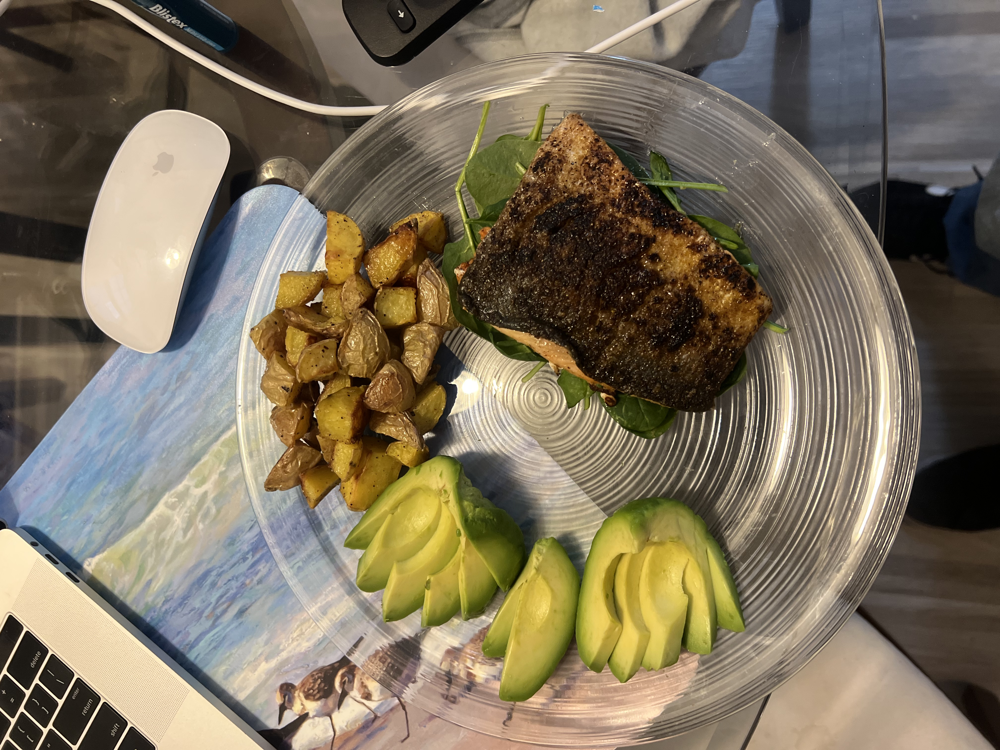

Blackened Salmon with Pesto Spinach
What you need
- Salmon Filet
- Old Bay Garlic Herb Seasoning
- Oil with a high smoke point
- Spinach
- Pesto
- Lemon
- Small potatoes
- Salt and Pepper
Directions
- Heat oven to 400F
- Slice potatoes into even bite sized peices, toss with a generous amount of S&P and Olive oil and place in oven.
- Pat dry Salmon filet and then scrape the knife on the scale side of the salmon to remove large scales.
- Slice half inch slits vertically across the salmon with half inch spaces in between.
- Rub the salmon with your garlic herb seasoning, salt and pepper, and a touch of oil.
- Toss about a tablespoon of oil on a cast iron pan, and crank the heat up.
- When the pan is hot, lay the salmon down on its scale side and cook for 5-6 minutes or until the salmon becomes less translucent.
- While the salmon is cookin, toss some spiach and pesto in a sperate pan and stir until spinach begins to wilt. This will be the bed for your salmon.
- After 5 minutes or so flip the salmon and allow the other side to cook for about 5 minutes.
- Avoid moving the salmon around the pan until you flip if, this will allow the skin to get a better sear.
- Remove potatoes from oven, place on a plate net to your pesto spinach.
- Before removing salmon from pan, spueeze a bit of lemon over filet
- Lastly Pplace your blackened salmon on your bed of spinach
- I chose to throw an avocado on the side, goes great with the salmon
- Enjoy!